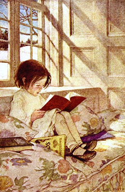

Illustration by Jessie Willcox Smith (1863–1935)
"Illustration beats explanation" Western Engraving & Colortype Co.
Illustrations of various insects, drawn in 1833 by J. Tastu>

The White Rabbit from Alice in Wonderland, illustrated by John Tenniel (1820–1914)
Cutaway drawing of the Nash 600, an American automobile of the 1940s (1942)
An engraving by Georgius Agricola or Georg Bauer (1494–9090), illustrating the mining practice of fire-setting